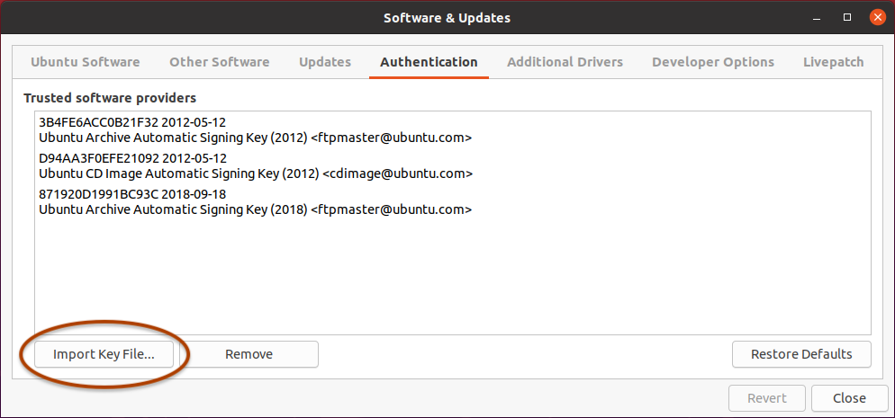
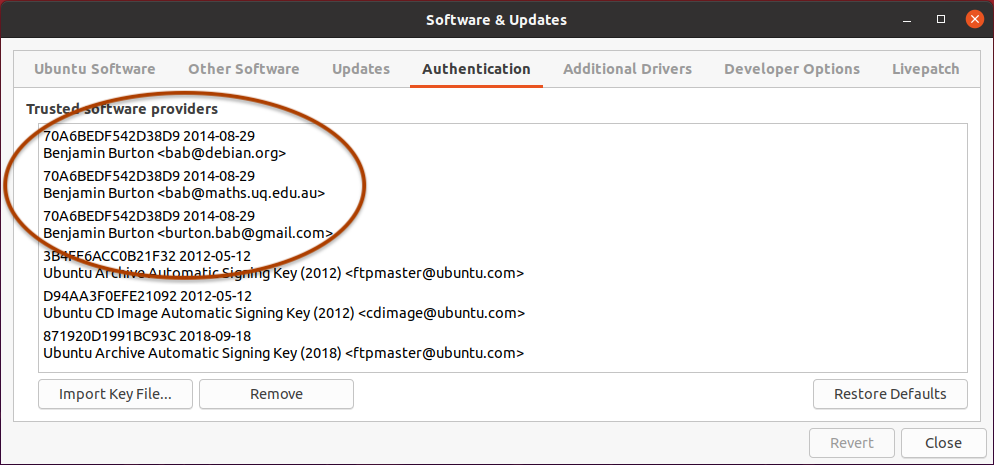
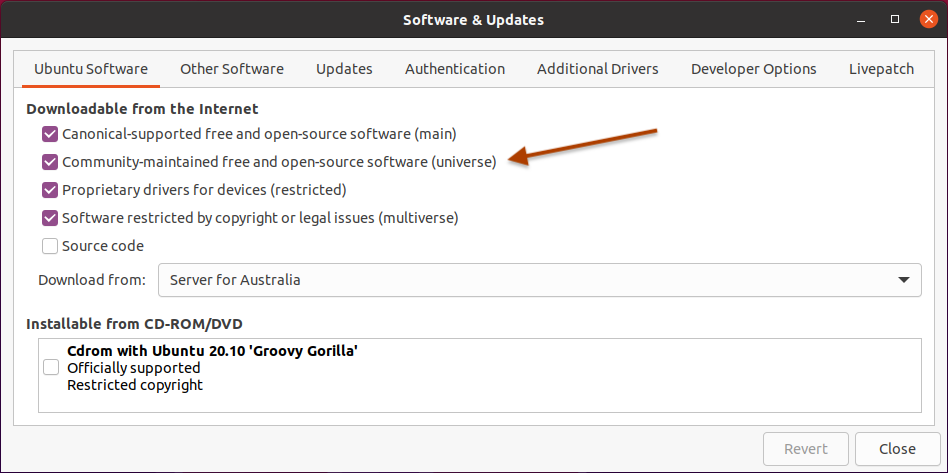
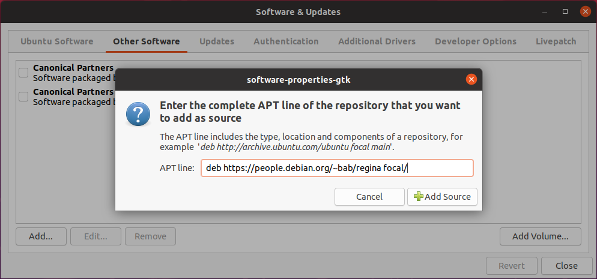
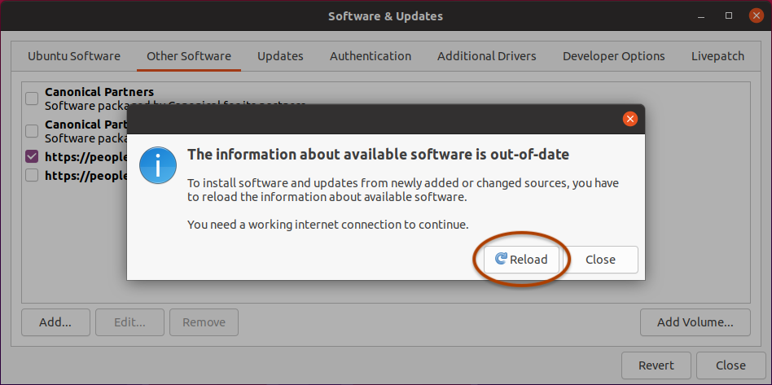
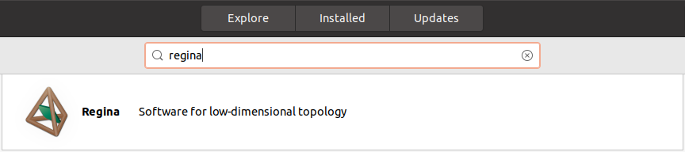
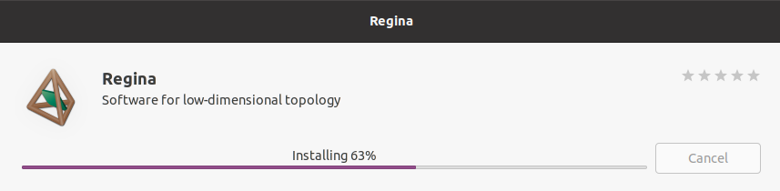

Ubuntu comes with Regina “out of the box” as part of its standard universe software collection. However, the version of Regina that ships with each Ubuntu release is fixed (e.g., Ubuntu 18.04 ships with Regina 5.1, and Ubuntu 21.04 ships with Regina 6.0.1).
If you wish to keep up-to-date with the newest version of Regina, follow these instructions.
You only need to do this once! These instructions show how to add Regina's repository to your list of software sources. Once you have done this, Ubuntu will happily manage installation and upgrades of Regina just like it does for any other Ubuntu package.
There are two ways to add Regina's repository: a simple command-line method, or a (slightly more complex) point-and-click method. Both are described below.
The instructions below only install the main packages regina-normal and regina-normal-doc, which is all that most people will need. If you are a C++ programmer and you wish to build Regina into your own projects, you should also install the package regina-normal-dev.
Install the debian-keyring package. This will give you Regina's cryptographic signing key (since Ben is a Debian developer). To do this, type:
sudo apt-get install debian-keyring
Download Regina's repository description, according to your version of Ubuntu:
Ubuntu 21.10 (impish): regina-impish.sources
Ubuntu 21.04 (hirsute): regina-hirsute.sources
Ubuntu 20.04 LTS (focal): regina-focal.sources
Ubuntu 18.04 LTS (bionic): regina-bionic.sources
Copy the file you just downloaded into Ubuntu's sources directory /etc/apt/sources.list.d/, as shown below (replacing ~/Downloads/regina-VERSION.sources with the location of the file you downloaded):
sudo cp -i ~/Downloads/regina-VERSION.sources /etc/apt/sources.list.d/
Note the suffix .d on the directory name! You do not want to overwrite sources.list.
Update the list of available packages. To do this, type:
sudo apt-get update
If you see an error like “the public key is not available”, it may be because you forgot to install debian-keyring in the first step.
Install or upgrade Regina like you would any other package. Type:
sudo apt-get install regina-normal
If you had previously added Regina's repository as a single line in /etc/apt/sources.list (possibly via the graphical Software & Updates application), you can delete that older entry now. The new file that you just downloaded encodes the same repository but with better security. (The old source will still work, so there is no urgency to change.)
Download Regina's cryptographic signing key: regina-key.txt
Open the Software & Updates application. If you are running the older Ubuntu 18.04 LTS (bionic), you should open Ubuntu Software instead and select Software & Updates from the main menu.
Under Authentication, import Regina's key (which you just downloaded).

You should see new keys appear in the list of trusted software providers, as pictured below. You can now delete regina-key.txt if you like.
Note: Ubuntu 20.10 seems to have a bug where the list of keys appears empty even after the import. Just continue, because this seems to be a visual problem only—despite what you see, the keys are still being imported.
Carefully check the new key IDs. The keys that were added should all have an ID of 70A6BEDF542D38D9, under the name Benjamin Burton.

If you still have the older key 31036EC736B861C1 (under the name Ben Burton, dated 2000-09-17), you can (and should) delete it. This was Regina's old signing key from many years ago, and because of its smaller key size, it is not in use any more.
Under Ubuntu Software, enable the community-maintained free and open-source software (universe) if this has not been done before.

Under Other Software, click the Add... button. When Ubuntu asks you for an APT line, type whichever line from the list below matches your version of Ubuntu:
deb https://people.debian.org/~bab/regina hirsute/
deb https://people.debian.org/~bab/regina groovy/
deb https://people.debian.org/~bab/regina focal/
deb https://people.debian.org/~bab/regina bionic/
In case you forget, the supported Ubuntu versions (e.g., 20.04 LTS) and their corresponding codenames (e.g., focal) are listed on Regina's main download page.
As an example, if you are running Ubuntu 20.04 LTS (focal), then you would use the line illustrated below:

Now close Software & Updates. Ubuntu should offer to reload the information about available software. Press Reload, so that Ubuntu can see the new packages for Regina.

Open the Ubuntu Software application and search for Regina.

Click on the package name (or icon, or description), and you will see more information. You should ensure that the version is correct (i.e., you are getting the latest version of Regina from this site, not the older version that is shipped with your version of Ubuntu).
Once you are satisfied that Ubuntu has found the right version, press Install and you are finished!
